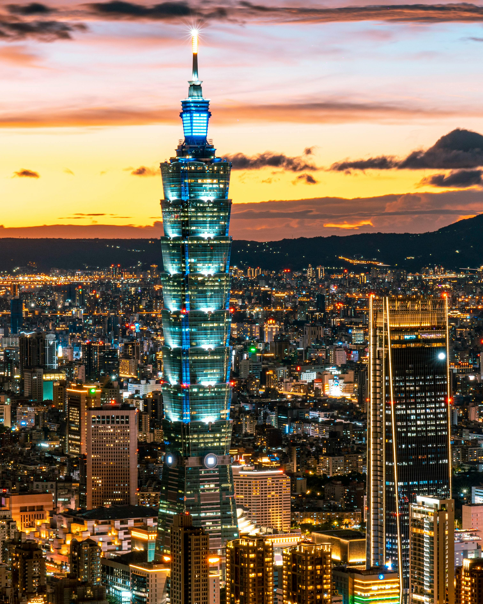
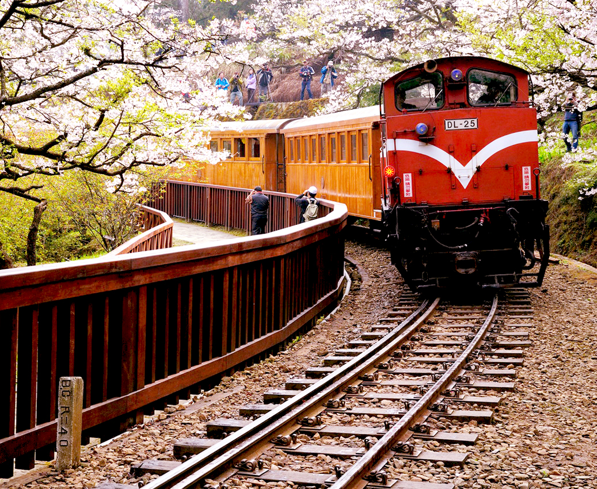
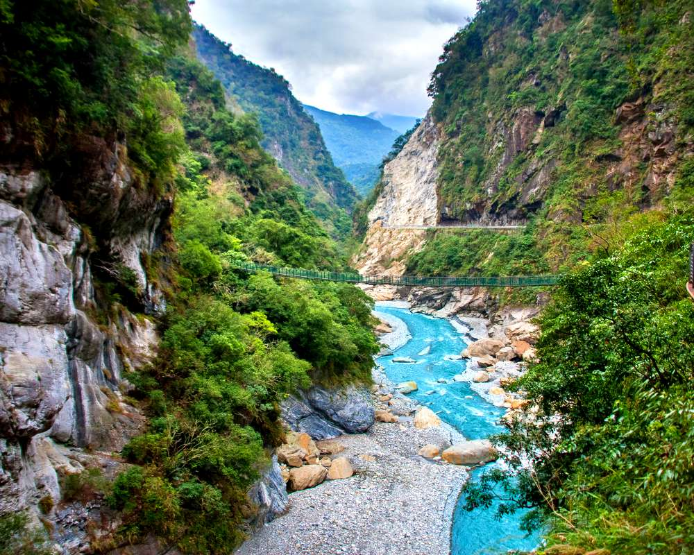

Taiwan has abundant natural resources, historical landmarks, and warm-hearted people.
Some famous attractions

Taipei 101, once the tallest building in the world, offers stunning panoramic views of Taipei City. It’s also a hub for luxury shopping and fine dining.

Alishan is famous for its picturesque sunrises and the historic Alishan Forest Railway. The mountain is covered with lush forests and offers serene hiking trails.
Jiufen is a charming old town with narrow streets and lantern-lit teahouses, offering a nostalgic experience of Taiwan’s past. The town is famous for its unique architecture and street food.

Taroko Gorge is a breathtaking marble-walled canyon, known for its dramatic cliffs and winding rivers. It’s a paradise for hikers and nature lovers seeking adventure.
Why do you go away? So that you can come back. So that you can see the place you came from with new eyes and extra colors. And the people there see you differently, too. Coming back to where you started is not the same as never leaving.
― Anita Desai
Sign up now!
Get the latest updates by clicking that button right over there.